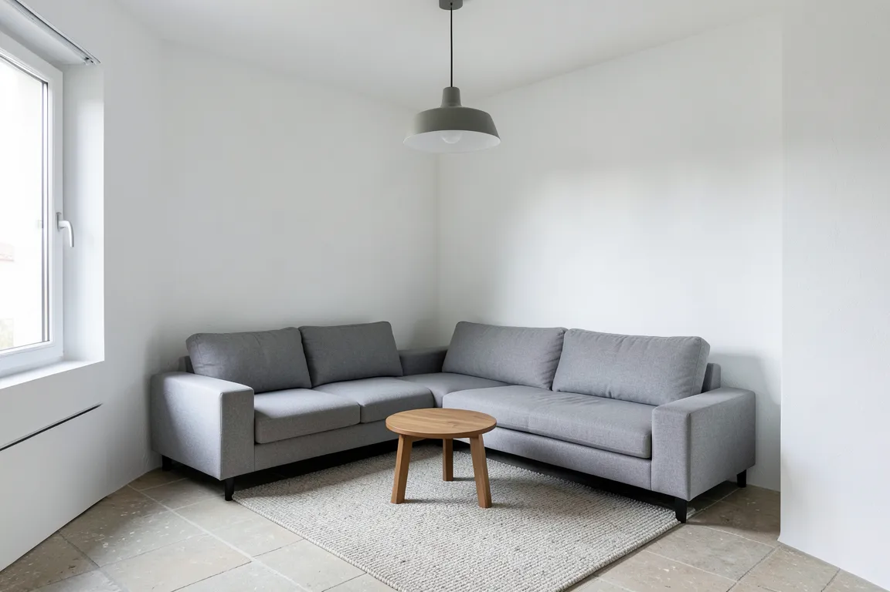

The room reduced to space, light and surface. White or pale stone walls, one floor material throughout, hidden storage and flush details leave only one or two pieces in view; daylight on a plain wall is the main event.

Core thesis
Remove every thing that is not necessary, so that space, light and material can be seen.
Design principles
Hide all storage behind flush, handleless doors that read as wall.
Use one floor material without thresholds through all rooms.
Show no more than 3 loose pieces of furniture in a room.
Use a palette of white, pale stone and one pale wood; no pattern.
Make the window the focal point: a large opening with a thin or hidden frame.
Detail every junction flush: shadow gaps in place of skirtings and architraves.